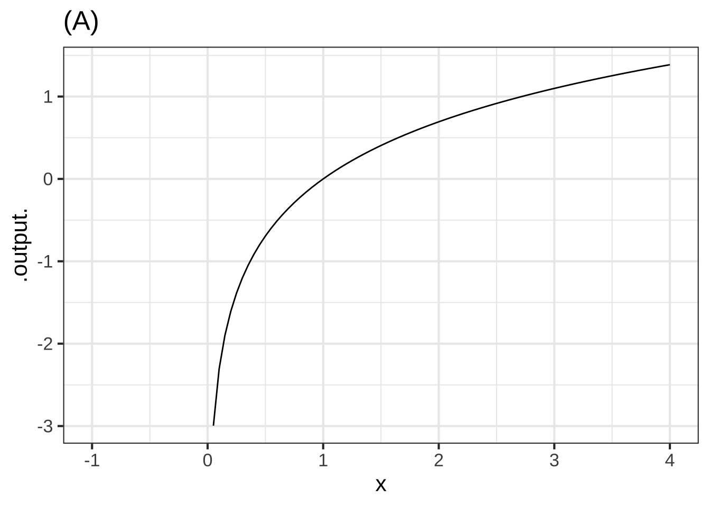
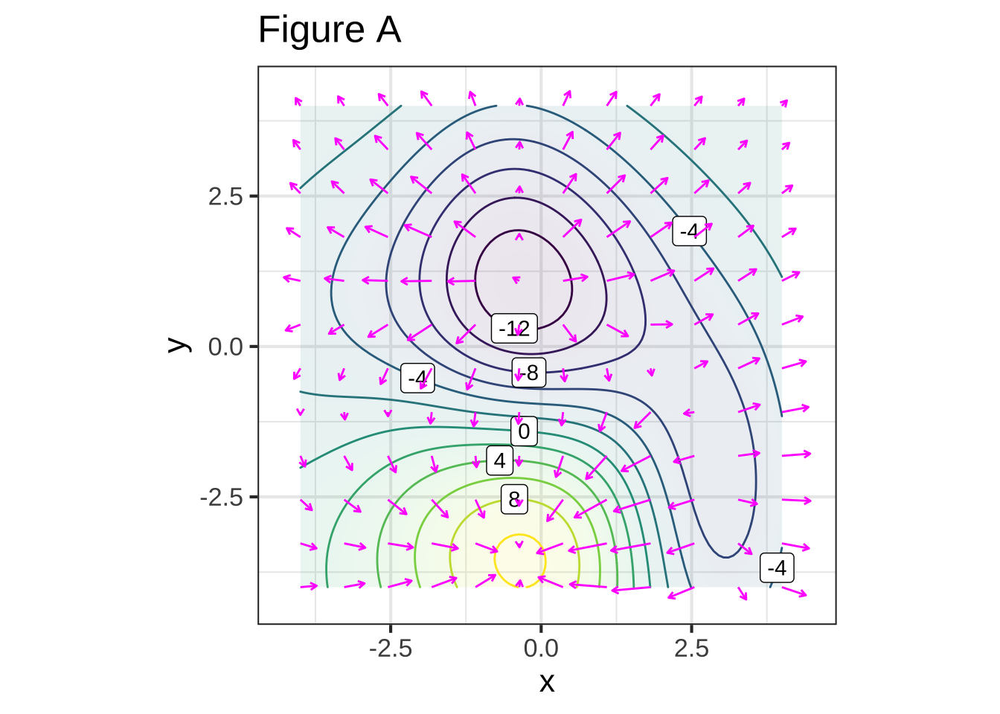
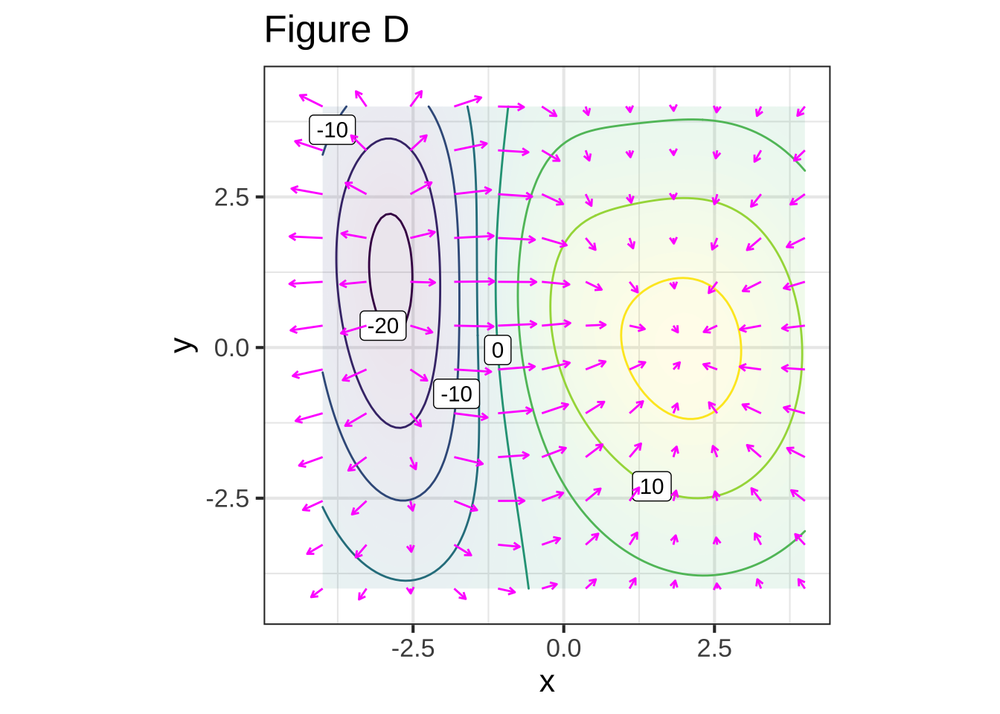

Chapter 22 Optimization
To “optimize” means to make something as good as possible with the available resources. Optimization problems are common in science, logistics, industry, and any other area where one seeks the best solution to a problem. Some everyday examples:
- How much salt to add to a stew. Stews can be too salty, or they can be not salty enough. Somewhere in the middle is the optimum.
- When to harvest trees being grown for lumber. Harvest too soon and you might be losing out on the prime growing years. Wait too long and trees will have settled in to slow growth, if any.
- Walking up too steep a slope is tiring and slows you down; that’s why hiking trails have switchbacks. When the switchbacks are too shallow, it takes a long time to cover the distance. What’s the most efficient angle to enable hikers to get up the hill in the shortest time.
22.1 Structure of the problem
In an optimization problem, there is one or more input quantity whose value you have to choose. The amount of salt; the years to wait from planting to harvesting a tree; the angle of the trail with respect to the slope. We’ll call this the decision quantity.
Similarly, there is one or more output quantity that you value and want to make as good as possible. The taste of the stew; the income produced by selling the lumber; the time it takes to walk up the hill. The output quantity is called the objective.
The model that relates to inputs to the objective output is called the objective function. Solving an optimization problem—once the modeling phase is complete—amounts to finding a value for the decision quantity (the input to the objective function) that produces the best level of the objective (the output from the objective function).
Sometimes the objective is something that you want to minimize, make as small as possible. In the hiking trail problem, we seek to minimize the amount of time it takes to walk up the trail. Sometimes you want to maximize the objective, as in the wood-harvest problem where the objective is to harvest the most wood per year.
Mathematically, maximization and minimization are the same thing. Every minimization problem can be turned into a maximization problem by putting a negative sign in front of the objective function. To simplify the discussion, in talking about finding the solution to an optimization problem we’ll imagine that the goal is to maximize. But keep in mind that many circumstances in the real world, “best” can mean to minimization.
The solution you seek in a maximization problem is called the argmax. This is a contraction of two words: the argument (that is, input) that produces the maximum output. (For minimization, the solution is the ***argmin.)
Once you have found the argmax you can plug that value into the objective function to find the value of the output. That value is the maximum.
People often talk about “finding the maximum.” This is misleading. The setup for an optimization problem is:
- Construct (that is, model) the objective function.
- Now that you know the objective function, find the input to that function—that is, the argmax—that produces the maximum output.
To illustrate the setup of an optimization problem, imagine yourself in the situation of a contest to see who can shoot a tennis ball the farthest into a field with a slingshot. During the contest, you will adjust the vertical angle of launch, place the ball into the slingshot’s cradle, pull back as far as possible, and let go. To win the contest, you need to optimize how you launch the ball.
The objective is the distance travelled by the ball. For simplicity, we’ll imagine that the velocity of the ball at release is fixed at \(v_0\). You’ll win or lose based on the angle of launch you choose.
Before you head out into the field to experiment, let’s do a bit of preparation. We’ll model how far the ball will travel (horizontally) as a function of the angle of launch \(\theta\) and the initial velocity \(v_0\).
The mathematics of such problems involves an area called differential equations, an important part of calculus which we’ll come to later in the course. Since you don’t have the tools yet, we’ll just state a simple model of how long the ball stays in the air. \[\text{duration}(v_0, \theta) = 2 v_0 \sin(\theta)/g\] \(g\) is the acceleration due to gravity, which is about \(9.8 \text{m}\text{s}^{-2}\), assuming that the contest is being held on Earth.
The horizontal distance travelled by the tennis ball will be \[\text{hdist}(v_0, \theta) = \cos(\theta) v_0\, \text{duration}(v_0, \theta) = 2 v_0^2 \cos(\theta)\sin(\theta) / g\] Our objective function is hdist(), and we seek to find the argmax. The input \(v_0\) is (we have assumed) fixed, so the decision quantity is the angle \(\theta\).
The best choice of \(\theta\) will make the quantity \(\cos(\theta)\sin(\theta)\) as large as possible. So in finding the argmax, we don’t need to be concerned with \(v_0\) or \(g\).
Finding the argmax can be accomplished simply by plotting the function \(\cos(\theta)\sin(\theta)\). We’ll implement the function so that the input is in units of degrees.
f <- makeFun(cos(pi*theta/180)*sin(pi*theta/180) ~ theta)
slice_plot(f(theta) ~ theta, domain(theta=c(0,90)))
slice_plot(f(theta) ~ theta, domain(theta = c(40, 50)))

Figure 22.1: The distance travelled by a ball launched at an angle of \(\theta\)$, according to the simple model is duration of flight and distance travelled.
From the graph, especially the zoomed-in version, you can read off the argmax as \(\theta = 45^\circ\).
Finding the argmax solves the problem. You may also want to present your solution by saying what the value of the output of hdist() is when the argmax is given as input. You can read off the graph that the maximum of \(\cos(\theta)\sin(\theta)\) is 0.5 at \(\theta = 45^\circ\), so overall the distance will be \(v_0^2 / g\)
Review Exercise: What is the dimension of \(v_0^2 / g\)?
22.2 Interpreting the argmax
The graphical solution given to the slingshot problem is entirely satisfactory. Whether that solution will win the contest depends of course on whether the model we built for the objective function is correct. There are potentially important things we have left out, such as air resistence.
Solving the optimization problem has prepared us to go out in the field and test the result. Perhaps we’ll find that the real-world optimum angle is somewhat steeper or shallower than \(\theta = 45^\circ\).
Besides the argmax, another important quantity to read from the graph in Figure 22.1 is the precision of the argmax. In strict mathematical terms, the argmax is exactly 45 degrees. But in practical terms, it may not matter so much to the outcome if we are a little away from \(45^\circ\). For example, according to the model, any angle in the range \(40^\circ < \theta < 50^\circ\) would produce an output that is within 1% of the distance reached at the argmax.
Contests are won or lost by margins of less than 1%, so you should not casually deviate from the argmax. On the other hand, \(45^\circ\) is the argmax of the model. Reality may deviate from the model. For instance, suppose that air resistance or wind might might have an effect of about 1% on the distance. You can expect that such factors might change the optimal angle by as much or more than \(\pm 5^\circ\).
22.3 Derivatives and optimization
We’re now going to reframe the search for the argmax and it’s interpretation in terms of derivatives of the objective function with respect to the decision quantity (\(\theta\) in the slingshot problem). For a function of one variable, this will not be an improvement from the look-at-the-graph technique to find the argmax. A genuine reason to use derivatives is to set us up in the future to solve problems with more than one variable, where it is hard to draw or interpret a graph. Also, describing functions in the language of derivatives can help us think more clearly about aspects of the problem, such as the precision of the argmax.
With a graph such as Figure 22.1, it’s easy to find the argmax; common sense carries the day. So it won’t be obvious at first why we are going to take the following approach:
Let’s denote an argmax of the objective function \(f(x)\) by \(x^\star\). Let’s look at the derivative \(\partial_x f(x)\) in the neighborhood of \(x^\star\). Referring to Figure 22.1, where \(x^\star = 45^\circ\), you may be able to see that \(\partial_x f(x^\star)\) is zero; the line tangent to the function’s graph at \(x^\star\) is flat.
Seen another way, the slope of \(f(x)\) to the left of \(x^\star\) is positive; moving a tiny bit to the right (that is, increasing \(x\) by a very small amount, leads to an increase in the output \(f(x)\). Intuitively, as you approach the peak of a hill, you are walking uphill.) Just to the right of \(x^\star\), the slope of \(f(x)\) is negative; as you reach the top of a hill and continue on, you will be going downhill. So the derivative function is positive on one side of \(x^\star\) and negative on the other, suggesting that it crosses zero at the argmax.
Inputs \(x^\star\) such that \(\partial_x f(x^\star) = 0\) are called critical points. Why not call them simply argmaxes? Because a the slope will also be zero at an argmin. And it’s even possible to have the slope be zero at a point that’s neither an argmin or an argmax.
Question tmp-24: Consider the function \(f(x) \equiv x^3\). Confirm that the value of the derivative \(\partial_x f(x = 0)\) and so \(x^\star = 0\) is a critical point. Which sort of critical point is \(x^\star=0\)? (Hint: Draw the graph of \(f(x)\) near \(x=0\) to see what’s going on.)
An argmax [But \(f(0) < f(x > 0)\), so \(x^\star=0\) can’t be an argmax.]
An argmin [But \(f(x < 0) < f(0)\), so \(x^\star=0\) can’t be an argmin.]
Neither (+) []
At this point, we know that values \(x^\star\) that give \(\partial_x f(x^\star) = 0\) are “critical points,” but we haven’t said how to figure out whether a given critical point is an argmax, an argmin, or neither. This is where the behavior of \(\partial_x f(x)\) near x=x^$ is important. If \(x^\star\) is an argmax, then \(\partial_x f(x)\) will be positive to the left of \(x^\star\) and negative to the right of \(x^\star\); walk up the hill to get to \(x^\star\), at the top the hill is flat, and just past the top the hill has a negative slope.
For an argmin, changing \(x\) from less than \(x^\star\) to greater than \(x\star\); you will be walking down into the valley, then level at the very bottom \(x=x^\star\), then back up the other side of the valley after you pass \(x=x^\star\). Figure 22.2 shows the situation.
## Warning: geom_vline(): Ignoring `mapping` because `xintercept` was provided.
## Warning: geom_vline(): Ignoring `mapping` because `xintercept` was provided.
## Warning: geom_vline(): Ignoring `mapping` because `xintercept` was provided.
## Warning: geom_vline(): Ignoring `mapping` because `xintercept` was provided.


Figure 22.2: Top row: An objective function near an argmax (left) and an argmin (right). Bottom row: The derivative of the objective function
The bottom row of graphs in Figure 22.2 shows the derivative of the objective function \(f(x)\), that is, \(\partial_x f(x)\). You can see that for the argmax of \(f(x)\), the derivative \(\partial_x f(x)\) is positive to the left and negative to the right. Similarly, near the argmin of \(f(x)\), the derivative \(\partial_x f(x)\) is negative to the left and positive to the right.
Stated another way, the derivative \(\partial_x f(x)\) has a positive slope near an argmin and a negative slope near an argmax.
Just as we differentiate \(f(x)\) to find it’s slope, so to find the slope of the function \(\partial_x f(x)\) we can differentiate it. The result is called the second derivative. We could write it \(\partial_x \left[\partial_x f(x)\right]\), but for brevity we write it \(\partial_{xx} f(x)\).
The second derivative of the objective function \(f(x)\) at a critical point \(x^\star\) is what tells us whether the critical point is an argmax, an argmin, or neither. Critical point \(x^\star\) | \(\partial_x f(x^\star)\) | \(\partial_{xx} f(x^\star)\) ———————–|———————|——————- argmax | 0 | negative argmin | 0 | positive neither| 0 | 0
Question tmp-25: Returning to the function \(f(x) \equiv x^3\), find the value of the second-derivative \(\partial_{xx} f(x^\star)\) evaluated at the critical point \(x = x^\star = 0\). Which of these is \(\partial_{xx} f( x=0\)?
Negative [But you established in the previous exercise that the critical point \(x^\star=0\) is neither an argmin nor wan argmax.]
Positive [But you established in the previous exercise that the critical point \(x^\star=0\) is neither an argmin nor wan argmax.]
Zero (+) []
When we differentiate a function \(f(x)\), we produce a new function that we can call anything we like. To help readers follow the thread of the story, it’s nice to name the new function \(\partial_x f(x)\). That signals clearly to the reader the origins of the new function with respect to the original function \(f(x)\).
In words, \(\partial_x f(x)\) is often called the derivative of \(f(x)\) (with respect to x). To “derive” is a very general term and could mean just about any way of creating something new from something old. In calculus, “derivative” always means “created by differentiation.” Perhaps it would have been better if history had led us to call \(\partial_x f(x)\) by the name “differentiated \(f(x)\)” or “the differential function of \(f(x)\).”
Graphically, we can read the second derivative \(\partial_{xx} f(x)\) as the slope of the first derivative \(\partial_x f(x)\) or as the concavity of the function \(f(x)\) itself. When \(\partial_{xx} f(x) < 0\), then \(f(x)\) is concave down (a frown). Likewise, when \(\partial_{xx} f(x) >0\) the \(f(x)\) is concave up (a smile). When \(\partial_{xx} f(x) = 0\), then \(f(x)\) has no curvature.
To this point, we’ve translated features of functions that are evident on a graph into the language of derivatives:
- The slope of a function \(f(x)\) at any input \(x\) is the value of the derivative function \(\partial_x f(x)\) at that same \(x\).
- The concavity of a function \(f(x)\) at any input is the slope of the derivative function, that is, \(\partial_x f(x)\).
- Putting (i) and (ii) together, we get that the concavity of a function \(f(x)\) at any input \(x\) is the value of the second derivative function, that is, \(\partial_{xx} f(x)\).
- At an argmax \(x^\star\) of \(f(x)\), the value of the derivative function \(\partial_x f(x^\star)\) is zero and the value of the second derivative function \(\partial_{xx} f(x^\star)\) is negative. (The situation at an argmin is similar, the derivative of the objective function is zero and the second derivative is positive.)
The graph shows three different functions labeled (A), (B), and (C).


Question A Function (A) is
concave down ✓ non-concave ☹︎ concave up ☹︎
Question B Function (B) is
concave down ☹︎ non-concave ☹︎ concave up ✓
Question C Function (C) is
concave down ☹︎ non-concave ✓ concave up ☹︎
Question D The negative of function (A) is
concave down ☹︎ non-concave ☹︎ concave up ✓
The graph shows a function \(\mbox{wave}(t) \equiv \sin(2 \pi t/4)\) and labels four input values \(t\).

Question E For what values of the input \(t\) is the function concave up?
- \(t = A\) and \(t=D\) ☹︎
- \(t = A\) and \(t=C\) ☹︎
- \(t = C\) and \(t = D\) ✓
- none of the above ☹︎
Question F For what values of the input \(t\) is the function non-concave?
\(t = A\) ✓ \(t=B\) ☹︎ \(t=C\) ☹︎ none of the above ☹︎
Question G Where is the function steepest?
\(t = A\) ✓ \(t=B\) ☹︎ \(t=C\) ☹︎ \(t=D\) ☹︎Here is a smooth function marked at a few points. Your task is, at each point, to estimate the value of the derivative, the sign of the second derivative, and the radius of the circle that would nicely match the function in a small region around each point. (Remember, we’re asking for the radius of the circle, which is half the diameter.)
To simplify things, here is a table giving seven different combinations of the quantities you are to estimate. Some of them correctly match one of the labeled points, some do not. All you need to do is choose which is the correct set of quantities for each labeled point.

| row | value of 1st deriv | sign of 2nd deriv | radius |
|---|---|---|---|
| i | -0.3 | pos | 0.25 |
| ii | 2.1 | near 0 | 2000 |
| iii | -1.4 | neg | 12 |
| iv | 0.3 | neg | 0.3 |
| v | 2.1 | pos | 0.1 |
| vi | 1.3 | neg | 3 |
| vii | 0.5 | pos | 1 |
Question A Which row from the table best matches the function at point A?
i ☹︎ ii ☹︎ iii ☹︎ iv ☹︎ v ☹︎ vi ☹︎ vii ✓
Question B Which row from the table best matches the function at point B?
i ☹︎ ii ✓ iii ☹︎ iv ☹︎ v ☹︎ vi ☹︎ vii ☹︎
Question C Which row from the table best matches the function at point C?
i ☹︎ ii ☹︎ iii ☹︎ iv ✓ v ☹︎ vi ☹︎ vii ☹︎
Question D Which row from the table best matches the function at point D?
i ✓ ii ☹︎ iii ☹︎ iv ☹︎ v ☹︎ vi ☹︎ vii ☹︎
Question E Which row from the table best matches the function at point E?
i ☹︎ ii ☹︎ iii ☹︎ iv ☹︎ v ☹︎ vi ✓ vii ☹︎Pick up on the Lorenz curve {.intheworld} in block 1. Compute the concavity of a lorenz function, showing that it’s everywhere positive. Then examine the concavity of a composition of lorenz functions to determine if that is necessarily everywhere positive.
What’s the critical point?
You’re familiar with the quadratic polynomial: \[g(x) = a_0 + a_1 x + a_2 x^2\] The graph of a quadratic polynomial is a parabola, which might be concave up or concave down. As you know, a parabola has only one critical point, which might be an argmin or an argmax.
Let’s find the critical point. We know that the critical point is \(x^\star\) such that \(\partial_x g(x_0) = 0\). Since we know how to differentiate a power law, we can see that \[\partial_x g(x) = a_1 + 2 a_2 x\] and, more specifically, at the critical point \(x^\star\) the derivative will be \[a_1 + 2 a_2 x^\star = 0\] The above is an equation, not a definition. It says that whatever \(x^\star\) happens to be, the quantity \(a_1 + 2 a_2 x^\star\) must be zero. Using plain old algebra, we can find the location of the critical point \[x^\star = -\frac{a_1}{2 a_2}\]
You’re very proud of your pet dog, Swimmer. You often go to the beach and walk along the water’s edge. You throw a ball down the beach, but at an angle so it lands in the water. Swimmer goes to work. She runs down the beach (fast) and then plunges into the water, heading toward the ball. She can run fast on the beach: 400 m/minute. But she swims rather slower: 50 m/min.
Suppose you threw the ball to a point 50 meters down the beach and 10 meters out in the water. The overall distance to the ball is therefore \(\sqrt{50^2 + 10^2} = 51\) meters. If Swimmer entered the water immediately, she would take about minute to reach the ball (51 m / 50 m/min). Swimmer can get to the ball faster by running down the beach a big and then turning into the water. If Swimmer ran all 50 meters down the beach and then turned to swim the 10 meters, it would take her (50/400 + 10/50) minutes, about one-third of a minute.
Can Swimmer do better? You can set up the calculation like this. Imagine \(x\) to be the distance down the beach that Swimmer runs. The time to run this distance will be \(x/400\). The distance remaining to the ball can be found by the pythagorean theorem. One leg of the triangle has length \((50-x)\), the other has length 10 m. So if \(x\) were 45, the distance to swim in the water would be \(\sqrt{(50-45)^2 + 10^2}\). Divide this distance by 50 m/min to get the time spent in the water.
distance_in_water <- makeFun( your_pythagorus_calculation ~ x)
time_to_ball <- makeFun(x/400 + distance_in_water/50 ~ x)Time_to_ball() takes one argument, the distance \(x\) Swimmer runs down the beach before turning into the water. Use a SANDBOX to find the distance that calculus-savvy Swimmer runs down the beach before turning into the water, if Swimmer’s goal is to get to the ball as fast as possible.
Question A What’s the optimal running distance for Swimmer?
47.25 ☹︎ 47.5 ☹︎ 48.25 ☹︎ 48.75 ✓ 49.25 ☹︎ 49.75 ☹︎
Here’s a news story about a mathematician’s dog on the shore of Lake Michigan. It’s not plausible that Swimmer has been trained in calculus. Perhaps the way Swimmer solves the running distance problem is simply to graphtime_to_ball(x) ~ x over a suitable domain and find the argmax by eye!
If you’re skeptical that a dog might do a calculus problem before running to fetch a ball, consider the path taken by a photon. “Fermat’s Principle” is that light takes the path of least time. To illustrate, consider the problem of a photon travelling from a point A to a point B, as in the diagram. The shortest path between the two points is a straight line. Along this straight-line path, the time taken by the photon will be the distance divided by the speed of light.
The diagram shows another path consisting of two segments, one of length \(l_1\) and the other \(l_2\). Obviously, the two-segment path is longer than the straight-line path. But Fermat’s principle would lead light to “prefer” the longer path if the time taken to traverse it is shorter.
## Warning in normalizePath("www/1200px-Fermat_Snellius.svg.png"): path[1]="www/
## 1200px-Fermat_Snellius.svg.png": No such file or directory
The reason the indirect path might be shorter is that the speed of light differs in different physical media. Light traveling in a vacuum famously has a speed of about 300,000 km per second. In air, the speed is smaller by a factor of 1/1.003. In water, the speed is smaller still: the factor is 1/1.3.
Imagine that the blue zone of the diagram is water and the clear zone air. The time for the photon to travel from point A to B is proportional to \(1.003\ l_1 + 1.3\ l_2\).
To see the path actually taken by light, let’s imagine that point A is \((x=0, y=10)\) and point B is \((x=20, y=-10)\), and that the boundary between water and air is at \(y=0\). We’ll place the point P at \((x, 0)\). The total time taken for light to traverse this path is 1.003 dist(A to P) + 1.3 dist(P to B).
Question A Which of these formulas gives the total time it takes for light to traverse the path from A to P at relative speed 1/1.003 and then the path from P to B at relative speed 1/1.3? A is located at \((0, 10)\), B is located at \((20,-10)\), and P is located at \((x, 0)\)
- \(1.003 \sqrt{(x-0)^2 +(0-10)^2}+ 1.3\sqrt{(20-x)^2 + (-10 - 0)^2}\) ✓
- \(\sqrt{(x-0)^2 +(0-10)^2}/1.003+ \sqrt{(20-x)^2 + (-10 - 0)^2}/1.3\) ☹︎ It’s true that you divide distance by speed to get time, but here the relative speeds are \(1/1.003\) and \(1/1.3\).
- \(1.003 \sqrt{(x-10)^2 +(0-0)^2}+ 1.3\sqrt{(-10 -x)^2 + (50 - 0)^2}\) ☹︎ This mixes up the x and y coordinates. The distance from A to P is \(\sqrt{(x_P - x_A)^2 + (y_P - y_A)^2}\). In this problem, point P is at \((50-x, 0)\).
Implement the calculation of total_time() in R, then use a graph to find the argmin.
total_time <- makeFun( your_formula ~ x)
slice_plot(total_time(x) ~ x, domain(x=c(0, 20)))
# For the next problem
dx_time <- D(total_time(x) ~ x)
dxx_time <- D(total_time(x) ~ x + x)Question B i) What value of \(x\) (that is, the argmin) minimizes the travel time of light between points A and B? (Choose the best answer)
- 10.52 ☹︎
- 11.02 ☹︎
- 11.19 ☹︎
- 11.61 ☹︎
- 12.07 ☹︎
- 12.22 ☹︎
- 12.46 ☹︎
- 12.50 ✓
- 12.95 ☹︎
- 13.19 ☹︎
- 13.21 ☹︎
- 13.34 ☹︎
- 13.92 ☹︎
- 14.03 ☹︎
- 14.14 ☹︎
- 14.16 ☹︎
- 14.44 ☹︎
- 14.5 ☹︎
- 14.94 ☹︎
Question C ii) Suppose that instead of being water, the blue area was glass. The speed of light in glass is roughly 1/1.5 times as big as in vacuum. What value of \(x\) minimizes the travel time of light between points A and B? (Choose the best answer)
- 10.13 ☹︎
- 11.07 ☹︎
- 11.13 ☹︎
- 11.5 ☹︎
- 11.57 ☹︎
- 12 ☹︎
- 12.38 ☹︎
- 12.62 ☹︎
- 12.87 ☹︎
- 12.88 ☹︎
- 12.95 ☹︎
- 13.16 ☹︎
- 13.4 ☹︎
- 13.60 ✓
- 13.71 ☹︎
- 13.85 ☹︎
- 14.18 ☹︎
- 14.25 ☹︎
- 14.34 ☹︎
- 14.7 ☹︎
Turn this into a problem about algebra.
Later in accumulation, figure out the mile-markers on the road.
There is a tradition in mathematics education of using geometrical, distance-related problems to illustrate optimization. As it happens, some such problems can provide some valuable insight into physical situations.
Suppose you have a function \(f(x)\) whose graph represents the path of a road through the jungle. There is a lion at coordinates \((3, 2)\) in the jungle. At what point as you travel along the road will you be closest to the lion.
The trick here is to see that your position on the road at any value of \(x\) is \((x, f(x))\). The distance to the lion as a function of \(x\) is \[ \text{lion_dist}(x) \equiv \sqrt{(x - 3)^2 + (f(x)-2)^2} .\]
The road and the lion are graphed in the sandbox for the road \(f(x) \equiv x^2 e^{-x}\). You can see that the road comes closest to the lion at roughly \(x=3\). When you implement the \(\text{lion_dist}(x)\) function, you’ll be able to find the argmin, that is, the value of the input \(x\) for which the output \(\text{lion_dist}(x)\) is minimal. The value of the function \(\text{lion_dist}(x)\) at the argmin is the min of the function.
slice_plot(x^2 * exp(-x) ~ x, domain(x=c(0,5))) %>%
gf_label(2 ~ 3, label="lion") %>%
gf_refine(coord_fixed())
To find the argmin of the distance to the lion more precisely, implement the \(\text{lion_dist}(x)\) function in the sandbox. Plot this out and look for the minimum. Alternatively, find \(\partial_x \text{lion_dist}(x)\) and find the \(x\) of the zero crossing.
Question A Using the sandbox above, find the argmin for which the graph of the function \(g(x) \equiv x^2 \exp(-x)\) comes closest to the point \((3, 2)\)? (Choose the best answer.)
- 2.03 ☹︎
- 2.07 ☹︎
- 2.21 ☹︎
- 2.27 ☹︎
- 2.28 ☹︎
- 2.33 ☹︎
- 2.37 ☹︎
- 2.39 ☹︎
- 2.43 ☹︎
- 2.48 ☹︎
- 2.58 ☹︎
- 2.71 ☹︎
- 2.80 ✓
- 2.94 ☹︎
In the previous problem, you used graphics to find the argmin of a function. You can, of course, successively reset the domain of the graphing window to zoom in on the location of the argmin.
To find the argmin numerically, you start with a (pretty good) guess for the argmin. Recall that a function (such as total_time()) can be modeled with a low-order polynomial. When the function has an extreme point the polynomial should include a quadratic term. Suppose you have guessed that \(x=10\) is a good starting guess for the argmin of the air-to-water problem. You can compute the first and second derivatives of total_time(x) with respect to x and evaluate those derivative functions at \(x=10\). (Use the D() function to construct the derivatives.) In the sandbox, use the value of those two derivatives at the \(x=10\) guess to find the approximation to the minimum of the function.
To help remind you, the quadratic approximation to a function \(t(x)\) around a reference point \(x_0\) is: \[q(x) \equiv t(x_0) + \partial_x t(x_0) [x - x_0] + \frac{1}{2} \partial_{xx} t(x_0) [x - x_0]^2\] Find the derivative \(\partial_x q(x)\) and set this equal to zero. Inserting appropriate values for \(x_0\), \(\partial_x t(x_0)\), and \(\partial_{xx} t(x_0)\) will enable you to calculate the value of \(x\) at the minimum of the approximating quadratic.
Question A iii) Letting the blue area be water (1/1.3 speed factor) and starting with a guess \(x_0=10\), find the \(x\) that minimizes the approximating quadratic.
- 9.912 ☹︎
- 10.748 ☹︎
- 11.017 ☹︎
- 11.151 ☹︎
- 11.267 ☹︎
- 11.327 ☹︎
- 11.515 ☹︎
- 11.713 ☹︎
- 11.81 ☹︎
- 12.074 ☹︎
- 12.276 ☹︎
- 12.321 ☹︎
- 12.438 ☹︎
- 12.461 ☹︎
- 12.579 ✓
- 12.618 ☹︎
- 12.637 ☹︎
- 12.993 ☹︎
- 13.261 ☹︎
- 13.36 ☹︎
- 13.527 ☹︎
- 13.888 ☹︎
Question B iv) Using the correct answer from (iii) for a new \(x_0\), find the value of \(x\) that minimizes the new approximating quadratic.
- 9.912 ☹︎
- 10.748 ☹︎
- 11.017 ☹︎
- 11.151 ☹︎
- 11.267 ☹︎
- 11.327 ☹︎
- 11.515 ☹︎
- 11.713 ☹︎
- 11.81 ☹︎
- 12.074 ☹︎
- 12.276 ☹︎
- 12.321 ☹︎
- 12.438 ☹︎
- 12.461 ✓
- 12.579 ☹︎
- 12.618 ☹︎
- 12.637 ☹︎
- 12.993 ☹︎
- 13.261 ☹︎
- 13.36 ☹︎
- 13.527 ☹︎
- 13.888 ☹︎
22.4 Tree harvesting
Your uncle Bob is writing a business plan for a tree farm for lumber. Having heard that you are taking Math 141Z, he emails you giving some information asking for some numbers. In particular, Bob sends you a report saying that, for the species of tree he plans to plant, the amount of usable lumber is a function of growth time \(t\) looking like the function defined in the sandbox:
lumber <- makeFun(ifelse(t<10, 0, 100*exp((t-25)/8)/(1 + exp((t-25)/8))) ~ t)
dt_lumber <- D(lumber(t) ~ t)
ave_growth_rate <- makeFun( your_expression_here ~ t)
slice_plot(lumber(t) ~ t, domain(t=c(0,100)))
Bob has heard that the time to harvest is when the tree is growing fastest.
Question C A) What is the value of t (in years) at which \(\partial_t\) lumber(t) is largest?
15 ☹︎ 16 ☹︎ 17 ☹︎ 18 ☹︎ 19 ☹︎ 20 ☹︎ 21 ☹︎ 22 ☹︎ 23 ☹︎ 24 ☹︎ 25 ✓ 26 ☹︎ 27 ☹︎ 28 ☹︎ 29 ☹︎ 30 ☹︎
You patiently explain to your uncle that you certainly do not want to harvest trees when they are growing the fastest. You say, “You want to wait until the average growth rate up to that point is fastest. That will be a little while before the tree reaches its adult volume.”
Question D B) What is the value of t (in years) for which the average growth rate, up to that time, is fastest.
15 ☹︎ 17 ☹︎ 19 ☹︎ 21 ☹︎ 23 ☹︎ 25 ☹︎ 27 ☹︎ 29 ☹︎ 31 ☹︎ 33 ☹︎ 35 ✓ 37 ☹︎ 39 ☹︎ 41 ☹︎plot_lens() function would have to be provided.
Figure 1 shows a lens together with a source and target point. Light passing through the lens is refracted. The path followed by the light will be the one with the shortest time of transit from source to target.
The light enters the lens at some point \(P_{in} = (x_{in}\ , \ -\mbox{Lens}(x_{in}))\) and leaves at \(P_{out} = (x_{out}\ ,\ \mbox{Lens}(x_{out}))\). We don’t know either \(x_{in}\) or \(x_{out}\). but we can find them by optimization.
To do this, we find the distance from the source to \(P_{in}\), and from \(P_{out}\) to the target. These two legs of the route are through air, so the time of transit on each leg is proportional to the refractive index 1.03 times the distance.
Of course, light also has to travel through the lens. We’ll make the lens out of glass with a high refractive index, so the transit time will be the distance from \(P_{in}\) to \(P_{out}\) multiplied by the lens’s refractive index of 1.8.
The objective function will be the sum of the three legs’ transit times. It’s already programmed for you in the sandbox. So is the command to make a contour plot of the output of the objective function over a domain of \(x_{in}\) and \(x_{out}\). Finally, the last line in the sandbox draws a picture of the lens and the light path, but you will have to insert the argmins \(x_{in}\) and \(x_{out}\) that you pick from the contour plot of the objective function. (The \(x_{in}\) and \(x_{out}\) shown in the initial code of the sandbox are not right!)
# Describe the shape of the lens
Lens_top <- makeFun(-90 + sqrt(100^2 - x^2) ~ x)
Lens_bottom <- makeFun(-Lens_top(x) ~ x)
# Define the objective function
transit_time <- makeFun(
1.03 * sqrt((x_in - -20)^2 + (Lens_bottom(x_in)- (-30))^2) +
1.80 * sqrt((x_out-x_in)^2 + (Lens_top(x_out) - Lens_bottom(x_in))^2) +
1.03 * sqrt((x_out - -10)^2 + (Lens_top(x_out)-50)^2) ~
x_in + x_out)
# Graph the objective function
contour_plot(transit_time(x_in, x_out) ~ x_in + x_out,
domain(x_in = c(-40,40), x_out = c(-40,40)), npts=200)
# Insert argmax from contour plot
plot_lens(10, -5, Lens_top, Lens_bottom)
Question A When the index of refraction of the lens is 1.80, what are the optimal values for \(x_{in}\) and \(x_{out}\)? (Choose the best answer.)
- \(x_{in} = -22, \ x_{out} = -21\) ✓
- \(x_{in} = -26, \ x_{out} = -20\) ☹︎
- \(x_{in} = -24, \ x_{out} = -21\) ☹︎
- \(x_{in} = -18, \ x_{out} = -17\) ☹︎
- \(x_{in} = -25, \ x_{out} = -20\) ☹︎
It’s a good practice to test software against situations where you know the right answer. A simple situation is when there is no lens at all. One way to do this is to change the middle line of transit_time() so that the index of refraction is 1.03, just like the surrounding air.
Question B When the index of refraction of the lens is 1.03, what are the optimal values for \(x_{in}\) and \(x_{out}\)? (Choose the best answer.)
- \(x_{in} = -17, \ x_{out} = -15\) ✓
- \(x_{in} = -18, \ x_{out} = -14\) ☹︎
- \(x_{in} = -16, \ x_{out} = -16\) ☹︎
- \(x_{in} = -18, \ x_{out} = -18\) ☹︎
- \(x_{in} = -17, \ x_{out} = -18\) ☹︎
Let’s explore an extreme situation. Diamond is the transparent material that has the highest index of refraction, 2.417. Imagine a material with an index of refraction of 10. This means that light will travel very slowly within the lens.
Essay question tmp-26: When you examine the contour plot oftransit_time() for this high index of refraction, there will be two, widely separated local minima. Explain briefly which part of the lens these two minima correspond to. Hint: High index means slow speed of light. Sometimes it’s worthwhile to go out of your way to avoid slowdowns.
Exercises involving computing derivatives
In the previous discussion, we used phrases such as “every function has a derivative,” or that “any function can be approximated” by a second-order polynomial. For most practical purposes, this is true. In the next chapter, however, we’ll set mathematical conditions on “every” and “any” that will let us see when there can be an exception.